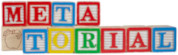

Metatorial Services, inc.

Tools used
• HTML • CSS • Javascript • jQuery • Bootstrap • Gimp
My contribution
This site was made from scratch to highlight the learning systems development from a long time teacher and business owner in the field of information technology. I designed a responsive template system for the content from his old sit, utilizing fontAwesome icons and custom flex components. This system takes advantage of AJAX technologies, reducing the amount of code to be loaded when you switch pages. Additionally, I filmed and editted an intro video for new visitors who don't know Bob.
Visit Site »Highlighted design elements
Responsive logos
I came up with the idea to spell out my client's company name with building blocks, to instantly associate his site with learning. Then, I organized a photo shoot with a talented photographer/graphic design that I know, who also colorized and cropped them out, allowing for multiple iterations of his logo, optimized for different viewport sizes.
Main Flow-chart Background Image
I designed a background for my client's site by taking a flow chart that he used to teach his students with, and coloring the different cells with the colors in his logo. Together, the images create a relational effect.
Highlighted Code
Query string redirect code
I created a javascript system which reads query string parameters, and uses AJAX to display them in the site's main page wrapper, and the url of the new page is subsequently updated. The system automatically creates new pages, given an iframe url, which is inserted into a template, and displayed in the page wrapper.
$(document).ready(function(){
//variable needed in order to listen for query string variables
var startURL = window.location.href;
var acceptedQueryVars = ["pageName"];
function queryStringRedirect(){
//check if query string is present
if(startURL.indexOf("?") > -1){
var currURL = startURL;
queryString = currURL.split("?"),
queryStringSepVals = queryString[1].split("&");
for(i = 0; i < queryStringSepVals.length; i++){
var currQueryKeyValPair = queryStringSepVals[i].split("="),
currQueryKey,
currQueryVal;
//check if key and val exists
if(currQueryKeyValPair[0] && currQueryKeyValPair[1]){
currQueryKey = currQueryKeyValPair[0];
currQueryVal = currQueryKeyValPair[1];
}else{
//set currQueryVal to a blank str
currQueryVal = startURL + "?pageName" + "=" + "home";
break;
}
//check if pageName var was included in query string
if(Object.values(acceptedQueryVars).indexOf(currQueryKey) > -1){
loadPageInfo(currQueryVal);
}else{
//set query string to ?pageName=home
if(window.history.pushState){
window.history.pushState("", "Home - Metatorial Serivices, inc.", startURL + "?pageName" + "=" + "home");
}else{
document.location.href = startURL + "?pageName" + "=" + "home";
}
}
}
}
}
})();